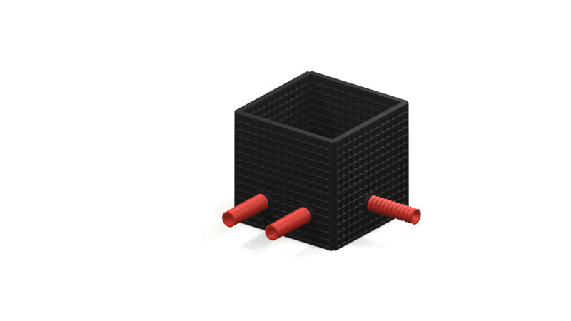
REDES SUBTERRÁNEAS · ÓPTICAS · DE SEGURIDAD
La red empieza
en cada pieza.
Ingeniería, obra y materiales
para redes que conectan
del proyecto a la puesta en marcha.
02 / DESPLEGAR
Abrí nuevas
posibilidades.
El conjunto se vuelve visible.
Paneles y módulos para pensar
la configuración del proyecto.
03 / CONFIGURAR
Cada parte.
Un mismo
propósito.
Una arqueta es un punto de acceso.
La solución empieza al conectar
producto, proyecto y aplicación.
04 / CONECTAR
Un acceso.
Más conexiones.
La arqueta se integra al recorrido.
Entradas y canalizaciones se definen
para cada proyecto.
05 / INTEGRAR
Bajo tierra.
Todo conectado.
Una mirada al interior de la red.
El acceso queda visible en este
corte conceptual del terreno.
RECORRÉ LA HISTORIA
Visualización conceptual · no es una guía de montaje.
01 / TRES REDES
INGENIERÍA. OBRA. DISTRIBUCIÓN.Tres redes.
Una misma mirada.
Proyecto, materiales y puesta en marcha para cada red, con marcas líderes y equipos propios de obra.
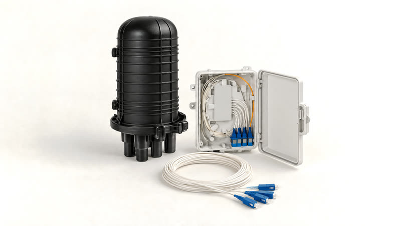
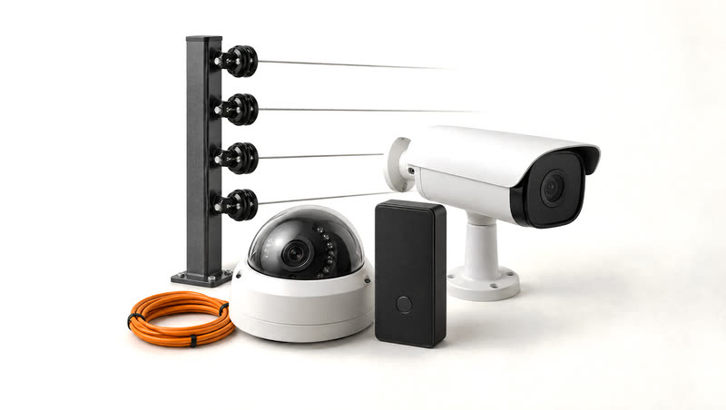
Imágenes de Redes Ópticas y de Seguridad generadas con IA · ilustrativas, sin marcas.
02 / PRODUCTOS
Catálogo oficialCuatro líneas.
Un mismo catálogo.
Distribuimos materiales, equipos e instrumental de marcas líderes para cada etapa de la red.
Redes Ópticas
De la red de acceso al equipamiento activo: todo lo que una red de fibra necesita, de interior y exterior.
- Soluciones WiFi
- Instrumentos y herramientas
- Accesorios de fibra óptica
- Equipos GPON
- Materiales de plantel
- Equipos activos
- Red estructurada
MARCAS
Redes Subterráneas
Acceso, canalización, localización y protección: soluciones más duraderas que las tradicionales, con asesoramiento directo de fábrica.
MARCAS
En foco: la arqueta modular Redes de Seguridad
Video seguridad y control de accesos compatibles con múltiples medios de identificación, integrables con alarmas y botones de pánico.
MARCAS
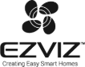
Redes Eléctricas
Instrumental, protección y accesorios para redes de energía, incluidos herrajes especiales para parques solares.
- Instrumentos y herramientas
- Protectores de tensión
- Protección de cables enterrados
- Herrajes especiales para parques solares
- Empalmes y cintas
- Accesorios para redes de energía
MARCAS
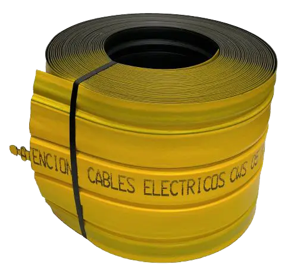
Categorías del catálogo oficial de comunitel.com.ar · consultá disponibilidad y fichas técnicas.
02.1 / ANATOMÍA DE UNA SOLUCIÓN
EN FOCO: REDES SUBTERRÁNEAS Representación generada. Consultá la ficha de la referencia.
Representación generada. Consultá la ficha de la referencia.Pensado por partes.
Elegido como sistema.
Acceder. Conducir. Proteger.
Cada decisión se conecta con la siguiente.
01 / CONFIGURACIÓN
Conversemos sobre tu proyecto El acceso se configura.
Referencia, dimensiones, entradas y tapa se definen según el proyecto y la documentación del producto.
02.2 / FAMILIAS SUBTERRÁNEAS
PRODUCTOS QUE SE COMPLEMENTAN.Cada función.
Su solución.
Elegí por dónde empezar.
Pensá hasta dónde conectar.
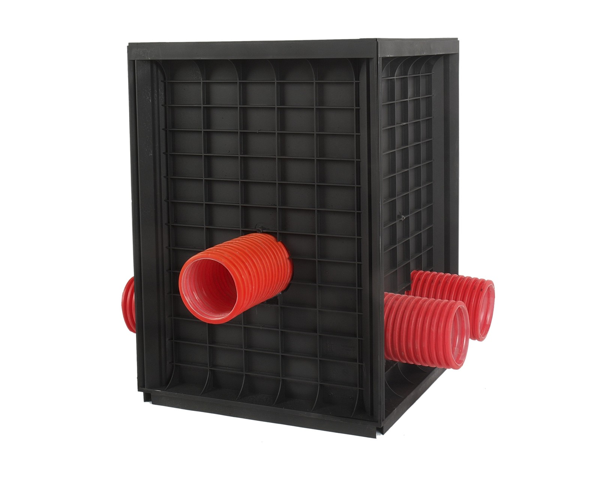
ACCESO / HIDROSTANK
El acceso se configura.
Paneles desmontables para configurar un punto de inspección. Elegí la referencia según las condiciones de tu obra.
Ver catálogo oficialFoto suministrada · 3D conceptual Meshy 7.1 de alta calidad, 48,5 MB; carga opcional; no sirve para medir.
SOLUCIONES QUE SE COMPLEMENTAN
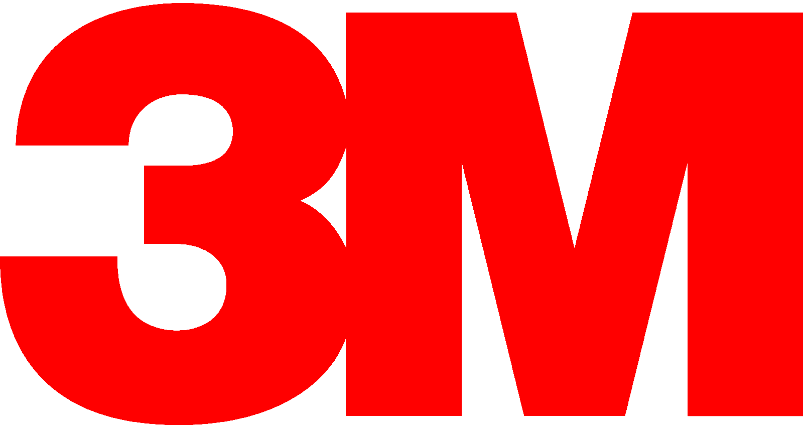
02.3 / LA RED EN DETALLE
Acercate.
Hay más por descubrir.

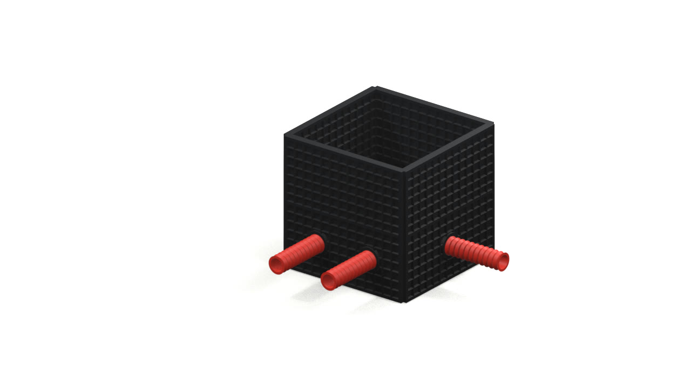
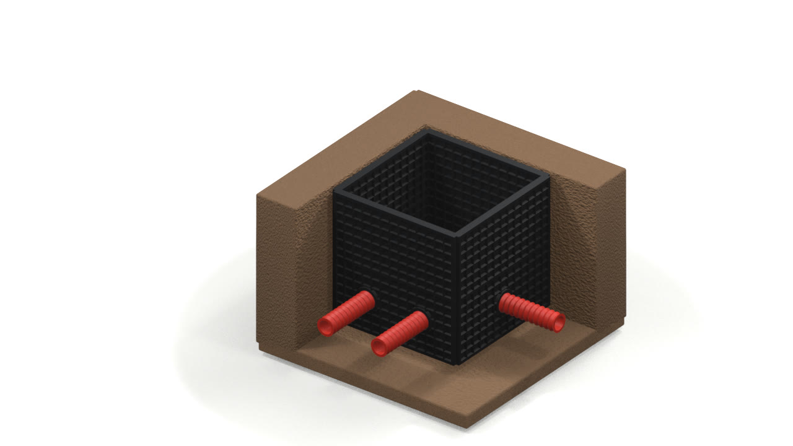
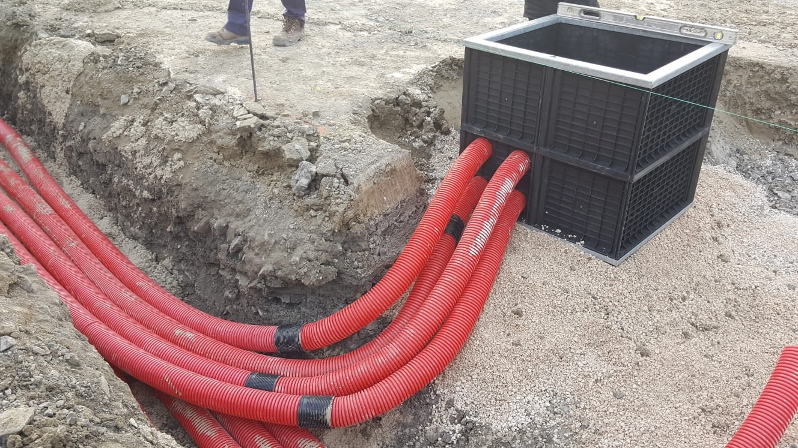
Deslizá o usá las flechas para explorar. Referencias, entradas y método de instalación se validan con documentación técnica.
02.4 / POR QUÉ PENSAR MODULAR
LA SOLUCIÓN COMPLETA.Más allá
de la pieza.
Transporte. Manipulación.
Instalación. Mantenimiento.
LA DECISIÓNTRADICIONALMODULAR HIDROSTANK
Logística
El traslado y el izaje se evalúan según masa y geometría de la pieza.
Paneles desmontables y apilables. Embalaje y manipulación según referencia.
Configuración
Geometría definida por la cámara elegida.
Combinación de módulos según proyecto y ficha.
Durabilidad
Evaluar material, juntas y condiciones del suelo.
Evaluar material, tapa, cargas y entorno de uso.
Comparación cualitativa, sin pesos, ahorros ni tiempos medidos.
Maniobras, dotación y maquinaria requieren validación técnica.
03 / INGENIERÍA & OBRAS
Obras llave en mano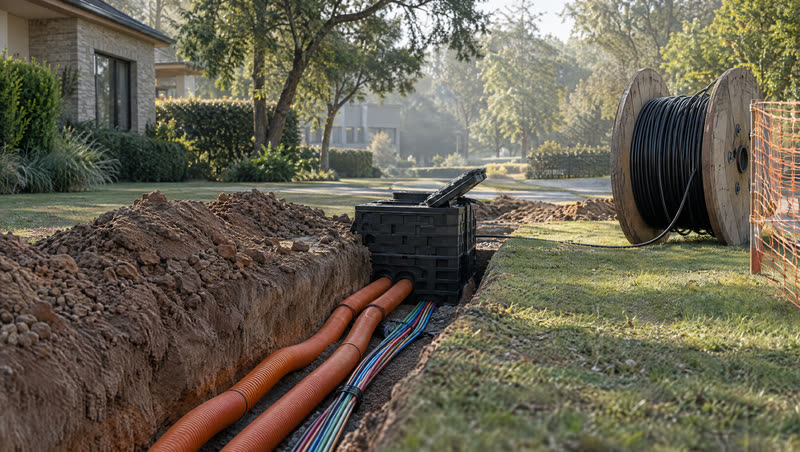
Del proyecto
a la puesta en marcha.
Ingeniería, provisión de materiales, mano de obra calificada y mantenimiento. Obras llave en mano para cada red.
01
Redes Ópticas
- Redes FTTH
- Enlaces punto a punto de fibra
- Redes POL (Passive Optical LAN)
- Servicios de mantenimiento
- Redes WiFi
- Cableado estructurado
02
Redes Subterráneas
- Obra civil
- Alquiler de zanjadora con operario
- Instalación de ductos y microductos
- Redes de fibra óptica subterránea
03
Redes de Seguridad
- Sistemas de video seguridad
- Centros de monitoreo
- Cercos eléctricos
- Sistemas de acceso
- Fibra sensitiva
- Barreras infrarrojas
SEGMENTOS
- Cooperativas
- ISP
- Gobierno
- Empresas
- Comercios
- Barrios privados
- Campus y grandes predios
- Universidades
- Hospitales
- Parques industriales
- Parques solares
- Minería
- Oil & Gas
SOLUCIONES HIDROSTANK HOMOLOGADAS EN
Telecom · Telefónica · Claro · Trenes Argentinos · Metrotel · Ufinet
03.1 / TU PROYECTO
Servicios oficialesTu proyecto.
Nuestra conversación.
El alcance y las condiciones
se acuerdan para cada obra.
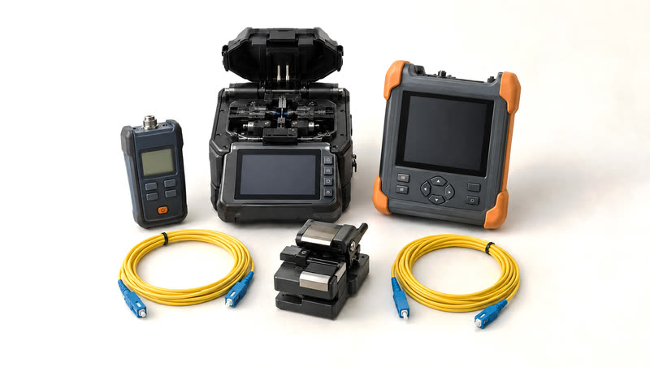
04 / SERVICIO TÉCNICO
Servicio técnico
oficial Grandway.
Reparación y calibración de fusionadoras, OTDR, powermeters y otros equipos Grandway, dentro o fuera de garantía, con técnicos certificados por la marca.
- Repuestos oficiales
- Respuesta rápida para minimizar contratiempos
- Atención personalizada
- Stock de instrumentos y herramientas Grandway
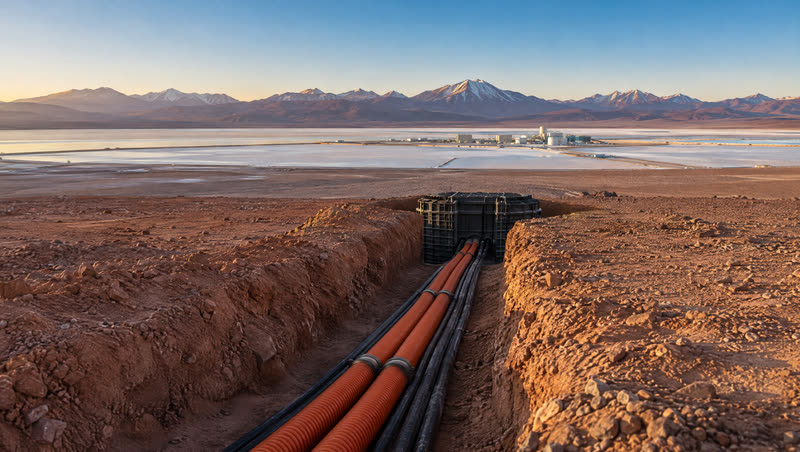
05 / MINERÍA
Integrador
tecnológico minero.
Conectividad, infraestructura subterránea y soluciones eléctricas para entornos con polvo, agua, vibraciones y condiciones extremas.
Conectividad para ambientes agresivos
- Anillo óptico para ambientes agresivos
- Red óptica para control de acceso
- Cables OPDC u OPGW
- Redes internas, aéreas o subterráneas
Arquetas modulares para minería
- Autoportantes, sin hormigonado externo
- Instalación sin maquinaria pesada
- Polipropileno reforzado, reciclado y reciclable
- Interiores de 35×35 a 146×146 cm · alturas de 40 a 120 cm
- Tapas de fundición dúctil, plástico u hormigón
Soluciones eléctricas
- Acopladores de cables de media tensión
- Empalmes de contracción en frío
- Terminaciones QT III interiores y exteriores
- Kits para cables portátiles y de minería
CASO DE USO
Hablemos de tu operación
Proyecto Mariana
Salar de Llullaillaco, Salta, a 3.750 m sobre el nivel del mar. El proyecto de litio de Ganfeng Lithium, a través de Litio Minera Argentina S.A., utiliza arquetas Hidrostank: instalación rápida y segura en una ubicación remota y de difícil acceso.
Díptico de minería (PDF)06 / QUIÉNES SOMOS
PRODUCTOS. INGENIERÍA. OBRA.Conexiones
que conectan.
Acompañamos cada proyecto desde la ingeniería hasta la provisión de materiales y la puesta en marcha.
Proveemos mano de obra calificada y equipamiento de calidad mediante acuerdos con marcas de renombre. Profundizamos en cada necesidad para ser un aliado comprometido con la conectividad.
- +25
- años de experiencia
- 3
- redes llave en mano
- 4
- líneas de productos
- Oficial
- servicio técnico Grandway
DEL VISO · BUENOS AIRES / CÓRDOBA · ARGENTINA
07 / CLIENTES & PARTNERS
CONFIANZA CONSTRUIDA EN OBRA.La confianza
también se construye.
Operadores, cooperativas, empresas e instituciones que eligen trabajar con Comunitel.
Conocemos a Comunitel desde sus inicios y desde entonces es nuestro proveedor. Hace 20 años nos acompañan con un equipo profesional, amable y siempre tienen respuesta a nuestros proyectos. Sin duda seguimos apostando a ellos y la sinergia entre ambas empresas.
Hace más de 20 años que conozco a Comunitel, que acompaña a las cooperativas y siempre nos ha ayudado, no solamente desde el punto de vista tecnológico, sino apoyándonos en todo sentido para poder desarrollar los mejores servicios para las cooperativas.
Desde hace más de 20 años trabajamos con Comunitel y con el tiempo pasamos de tener una relación cliente-proveedor a convertirnos en socios estratégicos. Sabemos, trabajamos y confiamos en seguir creciendo juntos.
Clientes
Partners
REDES ÓPTICAS
REDES SUBTERRÁNEAS
REDES DE SEGURIDAD
REDES ELÉCTRICAS
Logos y testimonios publicados en comunitel.com.ar · su uso en esta propuesta requiere confirmación de Comunitel.
08 / NOVEDADES
Todas las novedadesLo que pasa
en la red.
Proyectos, tecnología y tendencias del mercado de infraestructura y telecomunicaciones.
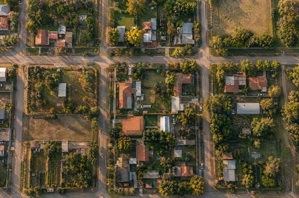
Inteligencia territorial para la expansión de SION
Relevamiento georreferenciado en Capilla del Señor y Los Cardales: 9.944 hogares pasados validados en campo para dimensionar la red FTTH.
Leer el casoaGIS Telco suma un agente de IA
Consultas en lenguaje natural sobre la red de fibra: abonados, disponibilidad y equipos fuera de servicio.
LeerStratos GS, premiada por la innovación de aGIS Telco
Premio a la Innovación Empresarial en los Premios Andaluces de Telecomunicaciones 2026.
Leer- InfraestructuraData center, shelters y racks: infraestructura segura y escalable
- Redes ópticasCEGL amplía su red FTTH para mejorar el servicio de CEGNET
- InfraestructuraCableado estructurado para redes empresariales
- FTTH & GISDe la memoria al gemelo digital: cómo CEPRAL transformó la gestión de su red FTTH
- ComunitelEncuentro tecnológico: energía, telecomunicaciones e infraestructura crítica
- Redes ópticasRedes POL: fibra eficiente y escalable para empresas, hoteles e instituciones
- FTTH & GISSi tu red FTTH no es digital, es invisible
- Redes ópticasEnlaces punto a punto de fibra óptica
- Comunitel+25 años de experiencia
No hay novedades de este tema en la selección.
Notas publicadas en comunitel.com.ar · resúmenes propios; imágenes de portada generadas con IA, ilustrativas.
10 / CONTACTO
Lo que sigue
empieza acá.
Contanos qué necesitás conectar,
dónde y en qué etapa está tu proyecto.
Av. Ing. Eduardo Madero 2250 · Del Viso
Buenos Aires, Argentina
DÓNDE ESTAMOS
Del Viso, Buenos Aires
- Dirección
- Av. Ing. Eduardo Madero 2250
B1669CLQ Del Viso, Buenos Aires - Horario
- Lunes a viernes, 8 a 17 h
Sábados y domingos, cerrado - Teléfono
- +54 (02320) 400989
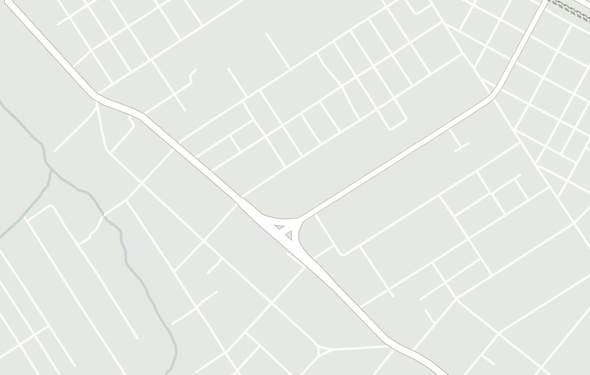